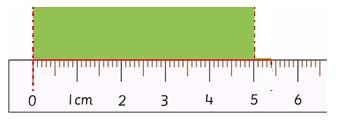
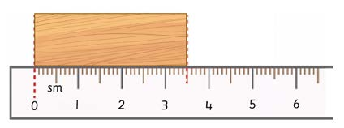

Vipimo vya milimeta na sentimeta
Vipimo vya milimeta na sentimeta hutumika mara nyingi tunapopima vitu kwa kutumia rula. Rula hupima urefu katika sentimeta na milimeta. Sentimeta moja ni sawa na milimeta 10. Kipimo kidogo cha rula ni milimeta.
Mfano wa 1
Kipande cha kitambaa kilichopimwa katika picha ifuatayo kina urefu gani?

Jibu
Urefu wa kipande cha kitambaa ni sm 5.
Mfano wa 2
Kipande cha ubao kilichopimwa katika picha ifuatayo kina urefu gani?

Jibu
Urefu wa kipande cha ubao ni sm 3 na mm 5.